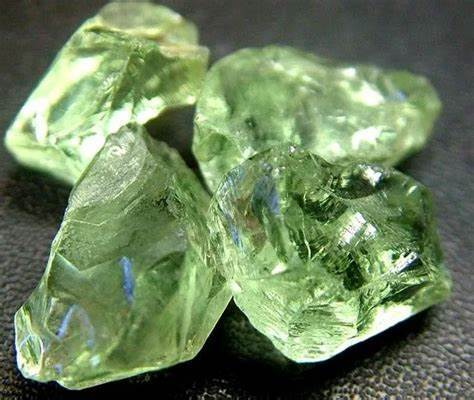

Collecting Amethyst: Exploring Its Meaning, Uses and Properties

Amethyst, a mesmerizing gemstone renowned for its captivating purple hues, has transcended centuries, captivating hearts and minds with its multifaceted allure. From its profound symbolism in various cultures to its diverse applications in jewelry, healing practices, and interior decor, amethyst's influence is undeniable. This comprehensive guide embarks on a journey to unravel the depths of amethyst, delving into its intricate meanings, multifaceted uses, captivating properties, and distinctive position among other purple gemstones. Whether you're an ardent collector, a jewelry enthusiast, or an inquisitive soul seeking to connect with the energy of crystals, this exploration will unveil the secrets and wonders of amethyst, enriching your understanding and appreciation for this extraordinary gem.
The Profound Meaning of Amethyst
Throughout history, amethyst has held a place of reverence and significance in diverse cultures, symbolizing a spectrum of virtues and beliefs. Revered by royalty and spiritual practitioners alike, amethyst is believed to possess a unique energy that promotes serenity, clarity, and spiritual connection.
Amethyst as a Crystal of Meaning
In the realm of crystal healing and metaphysical practices, amethyst is hailed as a potent stone with profound effects on emotional, mental, and spiritual well-being. It is said to enhance intuition, foster emotional balance, and alleviate stress and anxiety. Many believe that amethyst acts as a conduit to inner wisdom, allowing individuals to access their intuition and connect with their higher selves. It is also thought to facilitate a deeper understanding of one's emotions and facilitate the release of negative energy.
Amethyst's Historical Significance
Amethyst's significance can be traced back to ancient civilizations, where it was associated with sobriety and protection against intoxication. The Greeks and Romans, in particular, held the belief that amethyst could prevent drunkenness and often incorporated it into goblets and jewelry. This belief is rooted in the gem's Greek name, "amethystos," which translates to "not drunken."
Amethyst in Mythology and Religion
Amethyst has also found its place in various mythologies and religious traditions. In Greek mythology, it was associated with the god Dionysus, the deity of wine and revelry. According to legend, amethyst was created when Dionysus, in a fit of rage, turned a nymph named Amethystos into a white stone. Later, feeling remorseful, Dionysus poured wine over the stone, transforming it into the beautiful purple gemstone we know today.
In Christianity, amethyst is sometimes associated with Saint Valentine, the patron saint of love. It is believed to represent purity, devotion, and spiritual wisdom. Amethyst is also one of the twelve gemstones mentioned in the Bible as adorning the breastplate of the high priest Aaron.
Amethyst in the World of Jewelry

Amethyst's allure extends beyond symbolism and spirituality, making it a sought-after gemstone in the world of jewelry. Its vibrant purple color, combined with its relative abundance, makes it a versatile and accessible choice for creating exquisite adornments that can be cherished for generations.
Exploring Amethyst Jewelry Styles
Amethyst's versatility lends itself to a wide array of jewelry styles, from delicate and understated pieces to bold and eye-catching creations. Its ability to complement diverse outfits and personal preferences makes it a popular choice for both everyday wear and special occasions. Some of the most beloved amethyst jewelry styles include:
- Solitaire Amethyst Rings: These rings highlight the beauty of a single amethyst gemstone, allowing its natural brilliance and color to take center stage. They are often crafted in minimalist settings that emphasize the gem's inherent elegance.
- Amethyst Halo Rings: A central amethyst is encircled by a halo of smaller diamonds or other gemstones in this style, creating a dazzling display of light and color. The halo not only enhances the amethyst's brilliance but also adds a touch of luxury and sophistication.
- Amethyst Cluster Earrings: These earrings showcase clusters of amethyst crystals, forming a dramatic and captivating visual statement. The clusters can be arranged in various shapes and sizes, offering a unique and eye-catching aesthetic.
- Amethyst Beaded Necklaces: Strands of amethyst beads, whether smooth or faceted, are often used to create elegant and versatile necklaces. These necklaces can be worn alone for a minimalist look or layered with other pieces for a more eclectic style.
Tips for Caring for Amethyst Jewelry
To preserve the beauty of amethyst jewelry, proper care is essential. Amethyst, while relatively durable, can be sensitive to harsh chemicals and extreme temperatures. To maintain its luster and prevent damage, it is recommended to:
- Avoid Harsh Chemicals: Remove amethyst jewelry before engaging in activities that involve exposure to household cleaners, perfumes, or other chemicals.
- Clean Gently: Clean amethyst jewelry with a soft cloth and mild soapy water. Avoid abrasive cleaners or ultrasonic devices, as these can scratch the gem's surface.
- Store Properly: Store amethyst jewelry separately from other pieces to prevent scratching. Wrap each item in a soft cloth or place it in a separate compartment in a jewelry box.
Unveiling Amethyst's Geological Formation and Properties
Amethyst, a variety of quartz, owes its enchanting purple color to trace amounts of iron and irradiation. It is typically found within geodes, hollow rock cavities adorned with crystals, making it a captivating specimen for both geologists and collectors.
The Geological Formation of Amethyst
Amethyst geodes often form in volcanic rocks, where silica-rich solutions cool and crystallize within cavities. The size, shape, and quality of amethyst crystals can vary widely depending on the specific geological conditions during their formation. Factors such as temperature, pressure, and the presence of other minerals all play a role in the development of amethyst crystals.
Amethyst's Physical and Optical Properties
Amethyst boasts a range of physical and optical properties that contribute to its allure. It has a relatively high hardness, ranking 7 on the Mohs hardness scale, making it suitable for everyday wear. However, it is still susceptible to scratching, so care should be exercised to prevent damage.
Amethyst's purple color can range from pale lilac to deep violet, and it often exhibits a unique zoning pattern, with different shades of purple blending together within the crystal. This zoning pattern is a result of variations in the concentration of iron and other trace elements during the crystal's growth.
Amethyst also possesses a distinct pleochroism, meaning its color can appear different when viewed from different angles. This phenomenon adds to the gem's visual interest and contributes to its captivating beauty.
Comparing Amethyst to Other Purple Gemstones
While amethyst reigns supreme as the most well-known purple gemstone, it shares its captivating color with several other gems. Understanding the distinctions between these gems can empower you to make informed decisions when selecting jewelry or expanding your collection.
Amethyst vs. Purple Sapphire
Purple sapphire, a prized and rare gem, commands a higher value than amethyst. Its purple hue is typically deeper and more saturated, and it boasts exceptional hardness and durability. Purple sapphire is often associated with luxury and sophistication, making it a sought-after choice
Amethyst vs. Tanzanite
Tanzanite, a relatively recent discovery from Tanzania, captivates with its unique blue-violet color that shifts depending on the lighting. Its mesmerizing color change effect, known as pleochroism, adds to its allure. However, tanzanite is softer than amethyst and requires more delicate care to prevent scratching.
Amethyst vs. Purple Spinel
Purple spinel, a lesser-known gem, offers a vibrant purple color similar to amethyst but at a more affordable price point. Its increasing popularity in jewelry can be attributed to its beauty, durability, and relative affordability.
RELATED TOPIC:Exploring the Diverse World of Purple Crystals and Gemstones
Amethyst Geodes: Nature's Crystal Caves
Amethyst geodes, with their breathtaking formations of sparkling crystals, hold a special place in the hearts of collectors and crystal enthusiasts. These natural wonders offer a glimpse into the Earth's geological processes and serve as mesmerizing decorative pieces.
Types of Amethyst Geodes

Amethyst geodes come in a variety of shapes, sizes, and formations, each with its own unique charm. Some of the most popular types include:
- Cathedral Geodes: These geodes feature tall, pointed crystals that resemble the spires of a cathedral. Their majestic appearance makes them a favorite among collectors and decorators.
- Cave Geodes: Cave geodes have a more open, cavernous structure with smaller crystals lining the walls. They offer a unique perspective into the inner workings of a geode.
- Double Geodes: These rare and sought-after geodes contain two separate cavities lined with crystals, creating a stunning visual display.
Showcasing Amethyst Geodes
Amethyst geodes make striking decorative pieces for homes, offices, and healing spaces. They can be displayed on stands, shelves, or even incorporated into furniture. When choosing a location for your geode, consider the lighting, as natural light can enhance the brilliance and depth of the crystals.
RELATED TOPIC: Places to Find Geodes Near Me: A Comprehensive Guide to Geode Hunting in the US
Identifying Authentic Amethyst
While amethyst is relatively common, distinguishing genuine specimens from fakes or imitations is crucial. Here are some tips for identifying authentic amethyst:
- Color Consistency: Authentic amethyst should exhibit a consistent purple color throughout the gem. Look for natural zoning patterns, which are variations in color intensity that occur during crystal growth.
- Clarity: Amethyst typically possesses good clarity, although some inclusions (internal flaws) may be present. These inclusions are often natural and can add character to the gem.
- Hardness: Amethyst's relatively high hardness means it should resist scratching. Gently rubbing it against a piece of glass can help determine its authenticity.
- Refractive Index: Amethyst has a high refractive index, which gives it its characteristic brilliance. Observe the gem under different lighting conditions to see how it interacts with light.
Global Amethyst Locations
Amethyst deposits are found in various corners of the world, each region yielding gems with distinct characteristics. Some of the most notable amethyst-producing regions include:
- Brazil: Renowned for its vast deposits, Brazil is a major source of amethyst, particularly large, high-quality geodes and crystals. The country's mines have yielded some of the world's most impressive amethyst specimens, sought after by collectors and museums alike. Brazilian amethyst is often characterized by its deep purple color and exceptional clarity.
- Uruguay: Uruguay is another significant producer of amethyst, known for its abundance of deep purple varieties. Uruguayan amethyst often exhibits a unique zoning pattern, with different shades of purple blending together seamlessly within the crystal.
- Zambia: Zambian amethyst stands out for its distinctive reddish-purple hue. This unique color, often referred to as "raspberry amethyst," is highly prized by collectors and jewelry designers for its warm and vibrant tones.
- United States: Amethyst deposits can be found in several states across the United States, including Arizona, Colorado, and North Carolina. While the quantity of amethyst produced in the United States is relatively small compared to other regions, the gems found here often possess unique characteristics that appeal to collectors.
Beyond the Purple: Varieties of Amethyst
While purple is the most recognizable color of amethyst, this gemstone can also be found in other fascinating varieties. These variations occur due to differences in trace element content, irradiation levels, and geological conditions during formation.
- Prasiolite (Green Amethyst): Prasiolite, also known as green amethyst, is a rare and intriguing variety of amethyst that exhibits a captivating green color. This color is achieved through the heat treatment of amethyst, which alters the trace element composition and transforms the purple hue into a vibrant green. Prasiolite is sought after by collectors and jewelry enthusiasts for its unique color and rarity.
- Ametrine (Amethyst and Citrine): Ametrine is a bi-color gemstone that combines the purple of amethyst with the yellow or orange of citrine. This unusual combination occurs when a single quartz crystal forms with zones of different trace element concentrations, resulting in distinct color zones within the same gemstone. Ametrine is found primarily in Bolivia and is prized for its unique and eye-catching appearance.
- Chevron Amethyst: Chevron amethyst features distinctive V-shaped patterns, or chevrons, within the crystal. These patterns are formed by the intergrowth of amethyst and white quartz, creating a striking visual effect. Some believe Chevron amethyst to possess enhanced metaphysical properties, including amplification of energy and clarity of thought.
Amethyst in Feng Shui and Energy Work
Amethyst's metaphysical properties have made it a valuable tool in various holistic practices, including Feng Shui and energy work.
Amethyst in Feng Shui
In Feng Shui, amethyst is associated with the wealth and abundance area of the home or office. Placing amethyst in this area is believed to attract prosperity, abundance, and good fortune. It is also said to promote a harmonious and balanced energy flow within the space.
Amethyst in Energy Work
Amethyst is often used in energy work to cleanse and purify the aura, balance the chakras, and promote relaxation and stress relief. It is believed to facilitate spiritual connection and enhance intuition. Amethyst can be used in meditation, crystal grids, and other energy-healing practices to promote overall well-being.
The Future of Amethyst: Sustainability and Ethical Sourcing
As with many gemstones, the ethical and sustainable sourcing of amethyst is becoming increasingly important. Consumers are seeking to ensure that their amethyst purchases are not contributing to environmental damage or exploitative labor practices.
Sustainable Amethyst Mining
Sustainable amethyst mining practices aim to minimize the environmental impact of mining operations. This includes reducing water and energy consumption, minimizing waste, and restoring mined areas to their natural state.
Ethical Amethyst Sourcing
Ethical amethyst sourcing involves ensuring fair labor practices and safe working conditions for miners. It also involves transparency in the supply chain, so consumers can be confident that the amethyst they purchase has been sourced responsibly.
Conclusion
Amethyst, a gem of captivating beauty and profound meaning, continues to inspire and enchant people around the world. Its multifaceted nature, ranging from its geological formation to its spiritual significance, offers a wealth of knowledge and appreciation for those who seek to explore its depths. Whether you are drawn to its vibrant color, its metaphysical properties, or its versatility in jewelry and decor, amethyst is a gem that holds a special place in the hearts of many. As you embark on your own journey with amethyst, may you discover its unique magic and allow it to enrich your life with its beauty, wisdom, and tranquility.